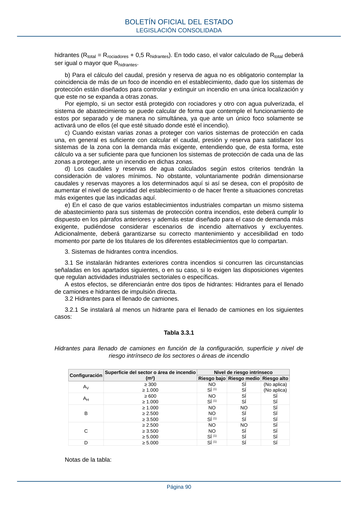

RSCIEI · edición 2025-04-10 · capa asociada
Documento RSCIEI-asociada · SHA-256 del PDF 85aa0af25d51e5b58d8975a4eefbf76d3f57a8933445cfe814ae9c4818a2e3e7
Página física 90 de 108.
Copia fiel del PDF fuente · Fuente oficial
Ficha de la disposición en la fuente oficial
Texto extraído y reorganizado: Basado en datos de la Agencia Estatal Boletín Oficial del Estado. PDF reproducido: Fuente de los datos: Agencia Estatal Boletín Oficial del Estado.
Formato: Texto de la página (Markdown)
hidrantes (Rtotal = Rrociadores + 0,5 Rhidrantes). En todo caso, el valor calculado de Rtotal deberá ser igual o mayor que Rhidrantes. b) Para el cálculo del caudal, presión y reserva de agua no es obligatorio contemplar la coincidencia de más de un foco de incendio en el establecimiento, dado que los sistemas de protección están diseñados para controlar y extinguir un incendio en una única localización y que este no se expanda a otras zonas. Por ejemplo, si un sector está protegido con rociadores y otro con agua pulverizada, el sistema de abastecimiento se puede calcular de forma que contemple el funcionamiento de estos por separado y de manera no simultánea, ya que ante un único foco solamente se activará uno de ellos (el que esté situado donde esté el incendio). c) Cuando existan varias zonas a proteger con varios sistemas de protección en cada una, en general es suficiente con calcular el caudal, presión y reserva para satisfacer los sistemas de la zona con la demanda más exigente, entendiendo que, de esta forma, este cálculo va a ser suficiente para que funcionen los sistemas de protección de cada una de las zonas a proteger, ante un incendio en dichas zonas. d) Los caudales y reservas de agua calculados según estos criterios tendrán la consideración de valores mínimos. No obstante, voluntariamente podrán dimensionarse caudales y reservas mayores a los determinados aquí si así se desea, con el propósito de aumentar el nivel de seguridad del establecimiento o de hacer frente a situaciones concretas más exigentes que las indicadas aquí. e) En el caso de que varios establecimientos industriales compartan un mismo sistema de abastecimiento para sus sistemas de protección contra incendios, este deberá cumplir lo dispuesto en los párrafos anteriores y además estar diseñado para el caso de demanda más exigente, pudiéndose considerar escenarios de incendio alternativos y excluyentes. Adicionalmente, deberá garantizarse su correcto mantenimiento y accesibilidad en todo momento por parte de los titulares de los diferentes establecimientos que lo compartan. 3. Sistemas de hidrantes contra incendios. 3.1 Se instalarán hidrantes exteriores contra incendios si concurren las circunstancias señaladas en los apartados siguientes, o en su caso, si lo exigen las disposiciones vigentes que regulan actividades industriales sectoriales o específicas. A estos efectos, se diferenciarán entre dos tipos de hidrantes: Hidrantes para el llenado de camiones e hidrantes de impulsión directa. 3.2 Hidrantes para el llenado de camiones. 3.2.1 Se instalará al menos un hidrante para el llenado de camiones en los siguientes casos: Tabla 3.3.1 Hidrantes para llenado de camiones en función de la configuración, superficie y nivel de riesgo intrínseco de los sectores o áreas de incendio Configuración Superficie del sector o área de incendio (m2) Nivel de riesgo intrínseco Riesgo bajo Riesgo medio Riesgo alto AV ≥ 300 ≥ 1.000 NO SÍ (1) SÍ SÍ (No aplica) (No aplica) AH ≥ 600 ≥ 1.000 NO SÍ (1) SÍ SÍ SÍ SÍ B ≥ 1.000 ≥ 2.500 ≥ 3.500 NO NO SÍ (1) NO SÍ SÍ SÍ SÍ SÍ C ≥ 2.500 ≥ 3.500 ≥ 5.000 NO NO SÍ (1) NO SÍ SÍ SÍ SÍ SÍ D ≥ 5.000 SÍ (1) SÍ SÍ Notas de la tabla: BOLETÍN OFICIAL DEL ESTADO LEGISLACIÓN CONSOLIDADA Página 90

Datos candidatos: compruebe celdas y notas en el PDF.